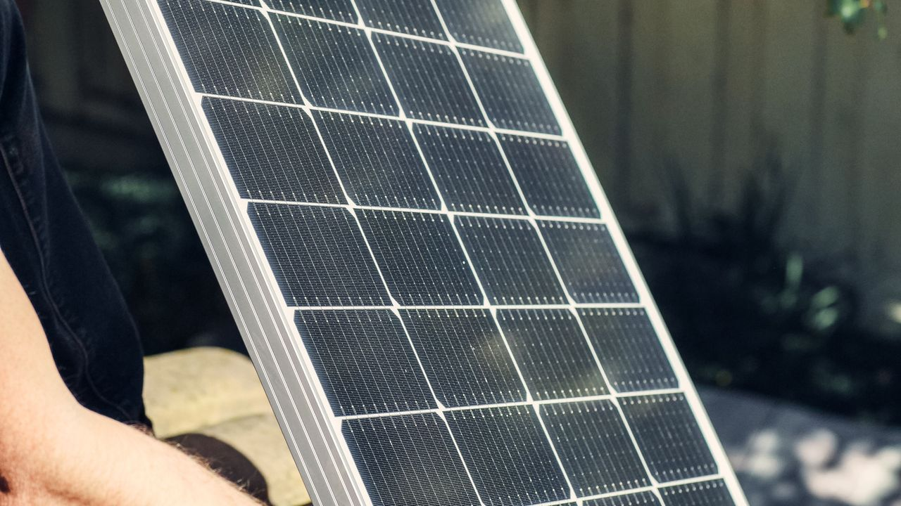

The watts on the label tell you the panel's peak power, but what you can actually run depends on how much energy it makes in a day — measured in watt-hours (Wh). So the real question isn't "can a 100W panel run my laptop?" but "how much energy does it produce, and how much do my devices use?"
How much energy a 100W panel makes a day
A panel only makes its full 100W in perfect, direct sun. Over a real day you multiply its power by the peak sun hours at your location and subtract real-world losses (heat, dust, angle, wiring, charging). With 4–5 peak sun hours and about 25% losses, that works out to roughly 300–400 Wh per day. On a cloudy day it can be a fraction of that, so it's safer to plan around 300 Wh.
What that actually runs
Once you know you have about 300–400 Wh a day to spend, you can match it to your devices. Here's what common small loads use:
| Device | Typical power | Example daily use | Energy used |
|---|---|---|---|
| LED lights (×4) | ~8 W each | 4 hours | ~130 Wh |
| Phone charging | ~10 W | 2 phones | ~25 Wh |
| Laptop | ~50 W | 3 hours | ~150 Wh |
| Small fan | ~30 W | 5 hours | ~150 Wh |
| Wifi router | ~10 W | 24 hours | ~240 Wh |
| Small TV | ~40 W | 3 hours | ~120 Wh |
| 12V mini-cooler | ~45 W | on/off cycling | ~300+ Wh |
You won't run all of these at once — the point is that your daily energy budget covers a sensible mix, for example lights all evening, a few phone and laptop charges, and a fan for a while. Add a power-hungry item like the mini-cooler and it eats most of the budget on its own.
What it won't run
A 100W panel can't keep up with high-power appliances: a full-size fridge, kettle, microwave, air conditioner, electric heater, or power tools. These draw far more than 100W while running and use more energy in minutes than the panel makes in hours. Those need a much larger array.
Why you need a battery
On its own, a panel only works while the sun shines, and its output wobbles with the light. To power anything in the evening or on demand, you store the day's energy in a battery and draw from it steadily. This is what turns a 100W panel from a fair-weather toy into something dependable. To size that battery, use the battery calculator, and to add up exactly what your devices need, the daily load calculator.
From the field
A 100W panel runs the basics — a few lights, charging a laptop or phone, a small fan. Where it really proves itself is in an emergency: when the grid goes down, it keeps the essentials you actually need running. Think of it as a small, dependable power bank you can carry anywhere.
Related tools
Work out your own numbers with the daily load calculator, size a battery with the battery calculator, estimate real output with the energy production calculator, and plan a bigger array with the solar panel calculator.
Frequently asked questions
What can a 100W solar panel run?
Small essentials: LED lights, phone and laptop charging, a small fan, a wifi router, and a small TV for a few hours — best with a battery. Not heavy appliances like a full fridge, kettle, microwave, or AC.
How much power does a 100W solar panel produce per day?
About 300–400 Wh a day with 4–5 peak sun hours after losses. Cloud, heat, dust, and poor angle lower it, so plan around the lower end.
Can a 100W solar panel run a fridge?
Only a small, efficient 12V cooler, and only with a battery. A standard fridge needs a bigger array.
Do I need a battery with a 100W solar panel?
For most uses, yes — a battery stores the day's energy so you can use it at night and on demand, which is what makes the panel genuinely useful.